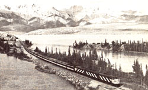

VIA RAIL CANADA
"When you have more time than money and want to travel from coast to coast, consider taking a scenic train trip through Canada," suggests reader Richard E. Grayson. "The Canadian passenger railroad system, called Via Rail, has trains departing daily-in both directions-on runs between Montreal/Toronto and Vancouver. You can, for example, leave Montreal at 8:30 on a Monday night and arrive in Vancouver at 7:30 on Friday morning.
"Currently, a coach ticket costs $156 (U.S.) one way between Montreal and Vancouver, which I think is pretty reasonable (especially compared to Amtrak's present one-way New York-San Francisco coach fare of $293). U.S. residents would, of course, have to add the cost of getting to a Canadian railhead to the trip's price.
"Though private and semiprivate sleepers are available for between $64 and $104 extra, my budget demanded that I settle for a coach ticket ... and I found that sleeping in the slightly reclining position my seat allowed was surprisingly comfortable. What's more, a spirit of comradery soon developed among those of us who had paid the least expensive fares. We shared food, drink, and reading materials.
"Bringing your own edibles will certainly help you to save additional money, but do plan to treat yourself to a dinner or two in the dining car, as the cuisine is very good. The best part of the trip, however, is the outstanding scenery (particularly if you sit on the northern side of the train). You should also be sure to spend some time in the domed observation car, which offers an even better view than do the regular windows.
"Actually, there's only one catch to traveling Via Rail," Richard concludes. "If you plan to take a trip during the busy summer holidays or over the Christmas season, you'll have to make your reservations months in advance."
For more information on inexpensive coast-to-coast travel, write to Via Rail Canada, Dept. TMEN, P.O. Box 8117, Montreal, Quebec, Canada H3C 3N3.
BRITAIN BY TRAIN
June Crabtree, another rail-riding MOTHER-reader, recently roamed all over the British Isles on a Brit-Rail Pass, which offers unlimited travel in England, Wales, and Scotland. (An economy ticket costs, at present, $99 for seven days . . . $150 for 14 days . . . $190 for 21 days . . . and $225 for one month.)
June tells us that people who enjoy the freedom of hopping on and off trains whenever they feel like it-without making reservations in advance-can do so with the unlimited-travel passes.
"Whenever I'd come to an interesting place," she writes, "I'd simply disembark and inquire at the ticket office about a night's lodging. The ticket agent would consult a list . . . make a few phone calls . .. and direct me to a nearby 'bed-and-breakfast' establishment.
"The charge for such accommodations ranged from $8.00 to $15.00 a night . . . and once, when a sports event filled up the town of Chester, the ticket agent actually found me a room in her aunt's house! The 'impulse mode' of travel gave me the opportunity to meet a lot of interesting Britons in their own homes, and-better yet-I enjoyed the freedom of not having to plan ahead."
If you're interested in learning more about the advantages of Brit-Rail passes, contact the British Tourist Authority, Dept. TMEN, 680 Fifth Avenue, New York, New York 10019.
MAKE A SMOOTH TRANSITION
Those folks who want to study, work, live, or travel abroad for extended periods of time will find some excellent guidance in a publication called Transitions. The quarterly magazine was started, in 1977, by Clayton Hubbs-professor of modern literature and foreign study advisor at Hampshire College-and originally served as a means of screening foreign study programs. Since then, however, its scope has widened considerably.
Each issue zeroes in on a particular country, and provides fine reference material and access information on the howto of getting to a foreign land for less and enjoying the experience more once you arrive. (The latest issue even considers the "culture shock" often experienced by Americans who return home after a long sojourn overseas.)
"We address the people who want to make a smooth transition into another culture, work situation, or language," says Managing Editor Max Hartshorne. "Transitions describes what can be done . . . then tells you how to go about doing it."
Subscription rates are $6.00 for one year and $10.00 for two years, and single issues are available at $1.50 per copy, postpaid. Order from Transitions, Dept. TMEN, 18 Hulst Road, Amherst, Massachusetts 01002.
|
Photo Courtesy Of Canadian Government Travel Bureau |
 |
|